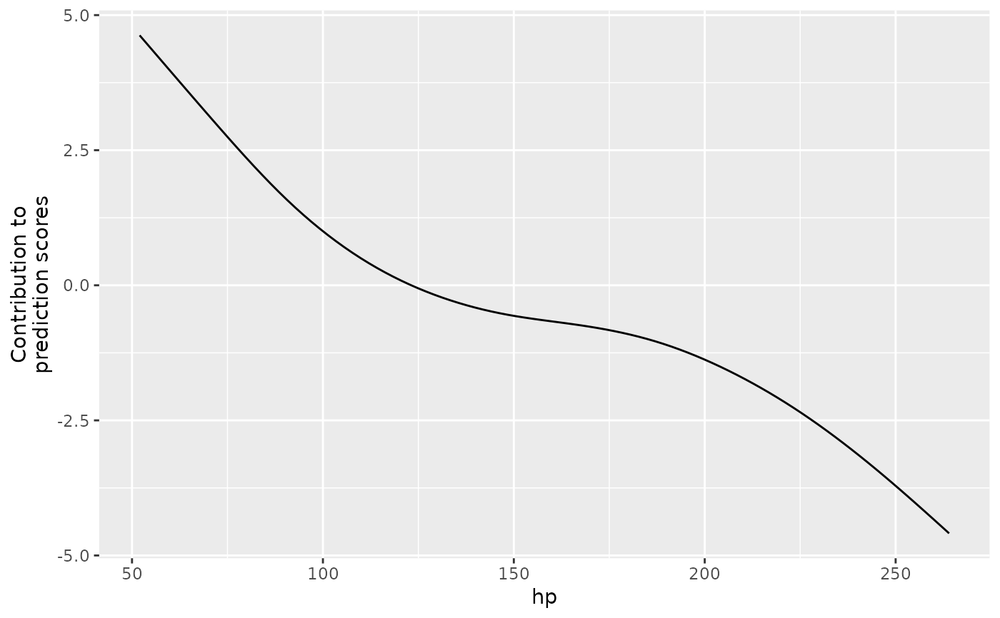

Component-wise boosting
Compboost.RdFit a component-wise boosting model (Buehlmann (2003)).
This class wraps the S4 class system with Compboost_internal
as internal model representation exposed by Rcpp.
The two convenient wrapper boostLinear() and boostSplines() are
also creating objects of this class.
Visualizing the internals see plotBaselearnerTraces(), plotBaselearner(), plotFeatureImportance(),
plotPEUni(), plotTensor(), and plotRisk(). Visualizing the contribution for
one new observation see plotIndividualContribution().
References
Buehlmann, Peter, Yu, Bin (2003). “Boosting with the L2 loss: regression and classification.” Journal of the American Statistical Association, 98(462), 324--339. doi:10.1198/016214503000125 .
Public fields
data(
data.frame)
The data used for training the model. Note: Ifoob_fractionis set, the input data is split intodataanddata_oob. Hence,datacontains a subset of the input data to train the model.data_oob(
data.frame)
An out-of-bag data set used for risk logging or early stopping.data_oobis split from the input data (see thedatafield).oob_fraction(
numeric(1))
The fraction ofnrow(input data)defining the number of observations indata_oob.response(ResponseRegr | ResponseBinaryClassif)
AS4response object. See?ResponseRegror?ResponseBinaryClassiffor help. This object holds the current prediction, pseudo residuals and functions to transform scores. Note: This response corresponds to thedatafield and holds the predictions for thatdata.frame.response_oob(ResponseRegr | ResponseBinaryClassif)
AS4response object. See?ResponseRegror?ResponseBinaryClassiffor help. Same asresponsebut fordata_oob.target(
character(1))
Name of the target variable indata.id(
character(1))
Name of the data object defined in$new(data, ...).optimizer(OptimizerCoordinateDescent | OptimizerCoordinateDescentLineSearch | OptimizerAGBM | OptimizerCosineAnnealing)
An initializedS4optimizer object (requires to callOptimizer*$new(..). See the respective help page for further information.loss(LossQuadratic | LossBinomial | LossHuber | LossAbsolute | LossQuantile)
An initializedS4loss object (requires to callLoss*$new(...)). See the respective help page for further information.learning_rate(
numeric(1))
The learning rate of the model. Note: Some optimizer do dynamically vary the learning rate.model(Compboost_internal)
The internal Compboost object exported fromRcpp. See?Compboost_internalfor details.bl_factory_list([BlearnerFactoryList)
A container with all base learners. See?BlearnerFactoryListfor details.positive(
character(1))
The positive class in the case of binary classification.stop_all(
logical(1))
Indicator whether all stopper must returnTRUEto early stop the algorithm. Comparable toall()ifstop_all = TRUEandany()ifstop_all = FALSE.early_stop(
logical(1))
Indicator whether early stopping is used or not.
Active bindings
offset(
numeric())
Offset of the estimated model.baselearner_list(
list())
Namedlistwith names$getBaselearnerNames(). Each elements contains"feature"(character(1)): The name of the feature fromdata."factory"(Baselearner*): The raw base learner asfactoryobject. See?Baselearner*for details.
boost_intercept(
logical(1))
Logical value indicating whether an intercept base learner was added with$addIntercept()or not.logs(
data.frame)
Basic information such as risk, selected base learner etc. about each iteration. Ifoob_datais set, further information about the validation/oob risk is also logged. The same applies for time logging etc. Note: Using the fieldlogsinternally is set and updated after each call to$getLoggerData(). Hence, it cashes the logged data set instead of recalculating the data set as it is done for$getLoggerData().idx_oob(
integer())
An index vector used to splitdataintodata = data[idx_train, ]anddata_oob = data[idx_oob, ]. Note:oob_fractionis ignored if this argument is set.idx_train(
integer())
An index vector used to splitdataintodata = data[idx_train, ]anddata_oob = data[idx_oob, ]. Note:oob_fractionis ignored if this argument is set.
Methods
Method new()
Creates a new instance of this R6 class.
Arguments
data(
data.frame)
The data set to build the object. Note: This data set is completely used for training ifis.null(idx_oob). Otherwise, the data set is split intodata = data[idx_train, ]anddata_oob = data[idx_oob, ].target(
character(1))
Character indicating the name of the target variable.optimizer(OptimizerCoordinateDescent | OptimizerCoordinateDescentLineSearch | OptimizerAGBM | OptimizerCosineAnnealing)
An initializedS4optimizer object (requires to callOptimizer*.new(..). See the respective help page for further information.loss(LossQuadratic | LossBinomial | LossHuber | LossAbsolute | LossQuantile)
An initializedS4loss object (requires to callLoss*$new(...)). See the respective help page for further information.learning_rate(
numeric(1))
Learning rate of the model (default is0.05).positive(
character(1))
The name of the positive class (in the case of binary classification).oob_fraction(
numeric(1))
The fraction ofnrow(input data)defining the number of observations indata_oob. This argument is ignored ifidx_oobis set.early_stop(
logical(1))
Indicator whether early stopping should be used or not.idx_oob(
integer())
An index vector used to splitdataintodata = data[idx_train, ]anddata_oob = data[idx_oob, ]. Note:oob_fractionis ignored if this argument is set.stop_args(
list(integer(1), integer(1)))listcontaining two elementspatienceandeps_for_breakwhich are used for early stopping.file(
character(1)
File from which a model should be loaded. IfNULL,dataandtargetmust be defined.
Method addLogger()
Add a logger to the model.
Arguments
logger(LoggerIteration | LoggerTime | LoggerInbagRisk | LoggerOobRisk)
The uninitialized logger.use_as_stopper(
logical(1))
Indicator defining the logger as stopper considering it for early stopping.logger_id(
character(1))
The id of the logger. This allows to define two logger of the same type (e.g. risk logging) but with different arguments....
Additional arguments passed tologer$new(logger_id, use_as_stopper, ...).
Method addIntercept()
This functions adds a base learner that adjusts the intercept (if selected). Adding an intercept base learner may be necessary, e.g., when adding linear effects without intercept.
Arguments
id(
character(1))
The id of the base learner (default is"intercept").data_source(InMemoryData)
Uninitialized data object used to store the meta data. Note: At the moment, just in memory storing is supported, see?InMemorydatafor details.data_source(InMemoryData)
Uninitialized data object used to store the meta data. Note: At the moment, just in memory storing is supported, see?InMemorydatafor details.
Method addBaselearner()
Add a base learner of one feature to the model that is considered in each iteration.
Using $addBaselearner() just allows including univariate features. See $addTensor() for
bivariate effect modelling and $addComponents() for an effect decomposition.
Arguments
feature(
character(1))
Name of the feature, must be a column indata.feature(
character(1))
Name of the feature, must be a column indata.id(
character(1))
The name of the base learner.bl_factory(BaselearnerPolynomial | BaselearnerPSpline | BaselearnerCategoricalBinary | BaselearnerCategoricalRidge)
Uninitialized base learner class. See the respective help page for details.data_source(InMemoryData)
Uninitialized data object used to store the meta data. Note: At the moment, just in memory storing is supported, see?InMemorydatafor details.data_source(InMemoryData)
Uninitialized data object used to store the meta data. Note: At the moment, just in memory storing is supported, see?InMemorydatafor details....
Further argument spassed to the$new(...)constructor ofbl_factory.
Method addTensor()
Add a row-wise tensor product of features. Note: The base learner are pre-defined
by the type of the feature. Numerical features uses a BaselearnerPSpline while categorical
features are included using a BaselearnerCategoricalRidge base learner.
To include an arbitrary tensor product requires to use the S4 API with using
BaselearnerTensor on two base learners of any type.
Usage
Compboost$addTensor(
feature1,
feature2,
df = NULL,
df1 = NULL,
df2 = NULL,
isotrop = FALSE,
...
)Arguments
feature1(
character(1))
Name of the first feature. Must be an element ofnames(data).feature2(
character(1))
Name of the second feature. Must be an element ofnames(data).df(
numeric(1))
The degrees of freedom used for both base learner (this parameter overwritesdf1anddf2).df1(
numeric(1))
The degrees of freedom used for the first base learner.df2(
numeric(1))
The degrees of freedom used for the first base learner.isotrop(
logical(1))
Indicator how the two penalties should be combined, ifisotrop == TRUE, the total degrees of freedom are uniformly distributed over the dimensions whileisotrop == FALSEallows to define how strong each of the two dimensions is penalized....
Additional arguments passed to the$new()constructor of the BaselearnerPSpline class.
Method addComponents()
Add an effect with individual components. A linear term is added as well as a non-linear term without the linear effect. This ensures that the linear component is selected prior to the non-linear effect. The non-linear effect is only included if a deviation from a linear effect is required.
Note: Internally, a BaselearnerPolynomial with degree one and a BaselearnerCentered is added. Centering a base learner makes the design matrix dense and hence memory is filled very fast. Considering binning may be an option to reduce the memory consumption.
Arguments
feature(
character(1))
Name of the feature, must be a column indata.feature(
character(1))
Name of the feature, must be a column indata....
Additional arguments passed to the$new()constructor of the BaselearnerPSpline class.
Method train()
Start fitting a model.
Arguments
iteration(
integer(1))
The maximal number of iteration. The algorithm can be stopped earlier if early stopping is active.trace(
integer(1))
The number of integers after which the status of the fitting is printed to the screen. The defaulttrace = -1internally usestrace = round(iteration / 40). To silently fit the model usetrace = 0.
Method prepareData()
Internally, each base learner is build on a InMemoryData object. Some
methods (e.g. adding a LoggerOobRisk) requires to pass the data as
list(InMemoryData | CategoricalDataRaw) with data objects as elements.
This function converts the given data.frame into that format.
Arguments
newdata(
data.frame)
New data set of the same structure asdata.newdata(
data.frame)
New data set of the same structure asdata.newdata(
data.frame)
New data set of the same structure asdata.newdata(
data.frame)
New data set of the same structure asdata.
Returns
list(InMemoryData | CategoricalDataRaw) with data container as elements.
Numeric features are wrapped by InMemoryData while categorical features
are included with CategoricalDataRaw.
Method prepareResponse()
Same as for $prepareData() but for the response. Internally, vectorToResponse() is
used to generate a ResponseRegr or ResponseBinaryClassif object.
Arguments
response(
vector())
A vector of typenumbericorcategoricalthat is transformed to an response object.
Returns
ResponseRegr | ResponseBinaryClassif object.
Method predict()
Calculate predictions.
Arguments
newdata(
data.frame)
New data set of the same structure asdata.newdata(
data.frame)
New data set of the same structure asdata.newdata(
data.frame)
New data set of the same structure asdata.newdata(
data.frame)
New data set of the same structure asdata.as_response(
logical(1))
In the case of binary classification,as_response = TRUEreturns predictions as response, i.e. classes.
Method predictIndividual()
While $predict() returns the sum of all base learner predictions, this function
returns a list with the predictions for each base learner.
Arguments
newdata(
data.frame)
New data set of the same structure asdata.newdata(
data.frame)
New data set of the same structure asdata.newdata(
data.frame)
New data set of the same structure asdata.newdata(
data.frame)
New data set of the same structure asdata.
Returns
Named list() with the included base learner names as names and the base learner
predictions as elements.
Method transformData()
Get design matrices of all (or a subset) base learners for a new data.frame.
Arguments
newdata(
data.frame)
New data set of the same structure asdata.newdata(
data.frame)
New data set of the same structure asdata.newdata(
data.frame)
New data set of the same structure asdata.newdata(
data.frame)
New data set of the same structure asdata.blnames(
character())
Names of the base learners for which the design matrices are returned. Ifis.null(blnames), compboost tries to guess all base learners that were constructed based on the feature names ofnewdata.
Method getInbagRisk()
Return the training risk of each iteration.
Returns
numeric() vector of risk values or NULL if $train() was not called previously.
Method getSelectedBaselearner()
Get a vector with the name of the selected base learner of each iteration.
Returns
character() vector of base learner names.
Method calculateFeatureImportance()
Calculate feature important based on the training risk. Note that early stopping should be used to get adequate importance measures.
Arguments
num_feats(
integer(1))
The number considered features, thenum_featsmost important feature names and the respective value is returned. Ifnum_feats = NULL, all features are considered.aggregate_bl_by_feat(
logical(1))
Indicator whether the importance is aggregated based on feature level. For example, adding components included two different base learners for the same feature. Ifaggregate_bl_by_feat == TRUE, the importance of these two base learners is aggregated instead of considering them individually.
Returns
Named numeric() vector of length num_feats (if at least num_feats were selected)
with importance values as elements.
Method saveToJson()
Save a Compboost object to a JSON file. Because of the underlying C++ objects,
it is not possible to use R's native load and save methods.
Arguments
file(
character(1))
Name/path to the file.rm_data(
logical(1))
Remove all data from the model. This applies to the training data, response, as well as the test data and response used for the test risk logging. Note: If data is removed, no continuation of the training is possible after reloading. Also, everything related to predictions based on the training data throws an error.
Examples
cboost = Compboost$new(mtcars, "mpg", loss = LossQuadratic$new(), oob_fraction = 0.3)
cboost$addBaselearner("hp", "spline", BaselearnerPSpline, degree = 3,
n_knots = 10, df = 3, differences = 2)
cboost$addBaselearner("wt", "spline", BaselearnerPSpline)
cboost$train(1000, 0)
#> Train 1000 iterations in 0 Seconds.
#> Final risk based on the train set: 0.79
#>
table(cboost$getSelectedBaselearner())
#>
#> hp_spline wt_spline
#> 221 779
head(cboost$logs)
#> _iterations oob_risk baselearner train_risk
#> 1 0 NA intercept 19.00819
#> 2 1 12.292375 wt_spline 17.45237
#> 3 2 11.044965 wt_spline 16.04599
#> 4 3 9.944512 wt_spline 14.77457
#> 5 4 8.975339 wt_spline 13.62502
#> 6 5 8.123368 wt_spline 12.58553
names(cboost$baselearner_list)
#> [1] "hp_spline" "wt_spline"
# Access information about the a base learner in the list:
cboost$baselearner_list$hp_spline$factory$getDF()
#> [,1]
#> [1,] 3
cboost$baselearner_list$hp_spline$factory$getPenalty()
#> [,1]
#> [1,] 72.4204
plotBaselearner(cboost, "hp_spline")
